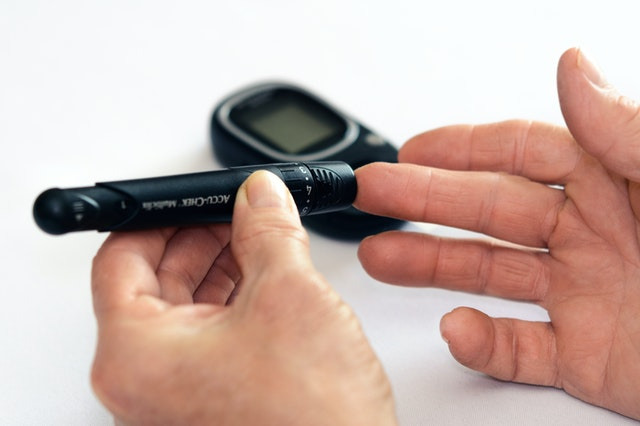

Glucosa en la sangre

Monitoreo de glucemia
A través de esta sección podrás realizar un mejor seguimiento de tu patología, así que no olvides registrar diariamente tus niveles de glucosa.
mg/dL
Fecha:
Hora
Periodo
Ayuno
Antes de comida
Depués de comer
Antes de acostarse
Otro
Registrar